Step 1 — Create First Operational Administrator
Created the initial administrator account for the Microsoft Entra ID test tenant.
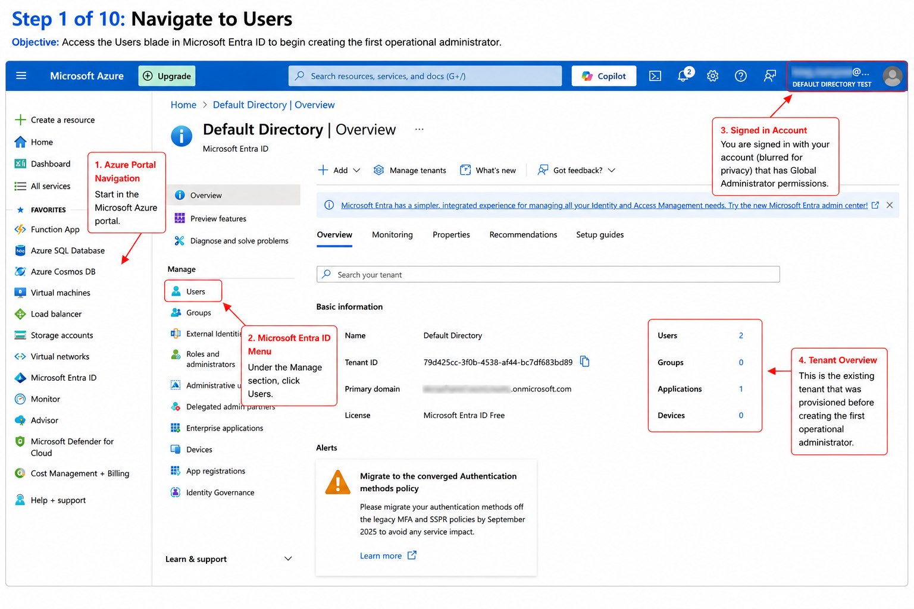
Microsoft Entra ID project documenting initial administrator creation, user provisioning, role assignment, license management, and secure user lifecycle operations.
A newly provisioned Microsoft Entra ID test tenant required the creation of an initial operational administrator to establish identity management, user provisioning, role administration, and user lifecycle operations before onboarding additional users. This administrator account serves as the foundational identity used to manage Microsoft Entra resources, configure security settings, and perform ongoing directory administration within a non-production environment.
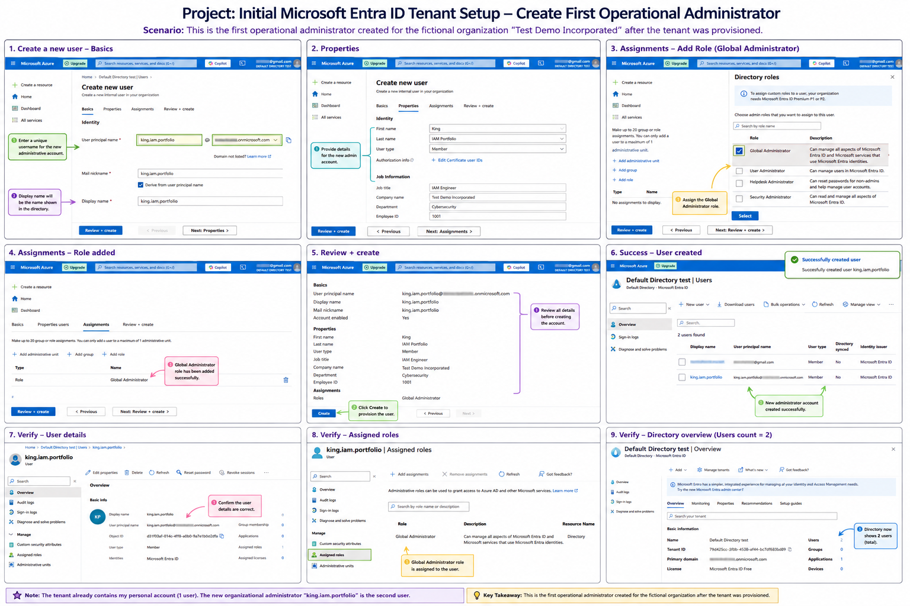
A fictional organization needed to prepare a new Microsoft Entra ID tenant for identity administration. Before additional users could be onboarded, the tenant required an operational administrator account with appropriate permissions to manage users, roles, licenses, and directory settings.
Created the initial administrator account for the Microsoft Entra ID test tenant.

Entered profile details and account properties for the new administrator account.
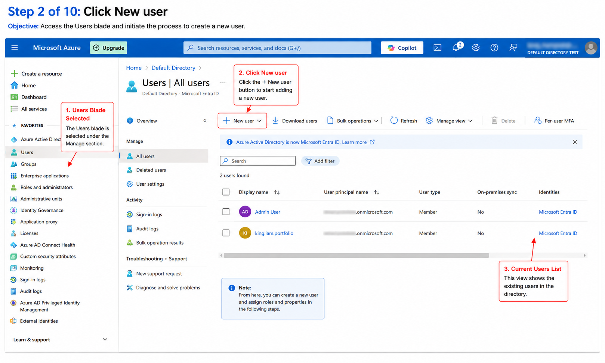
Assigned the Global Administrator role for initial tenant setup and identity administration.
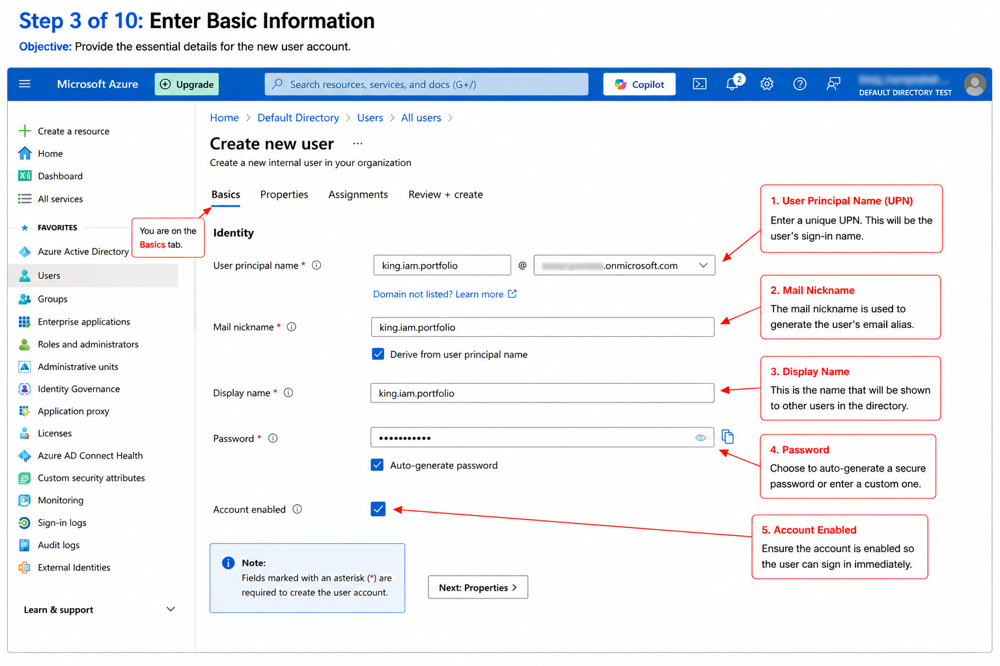
Verified that the administrative role was added successfully before account creation.
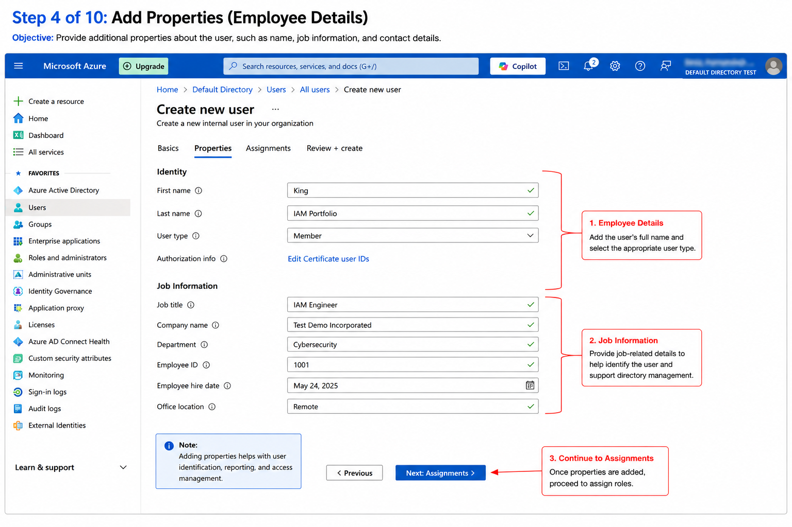
Reviewed account details and created the operational administrator account.
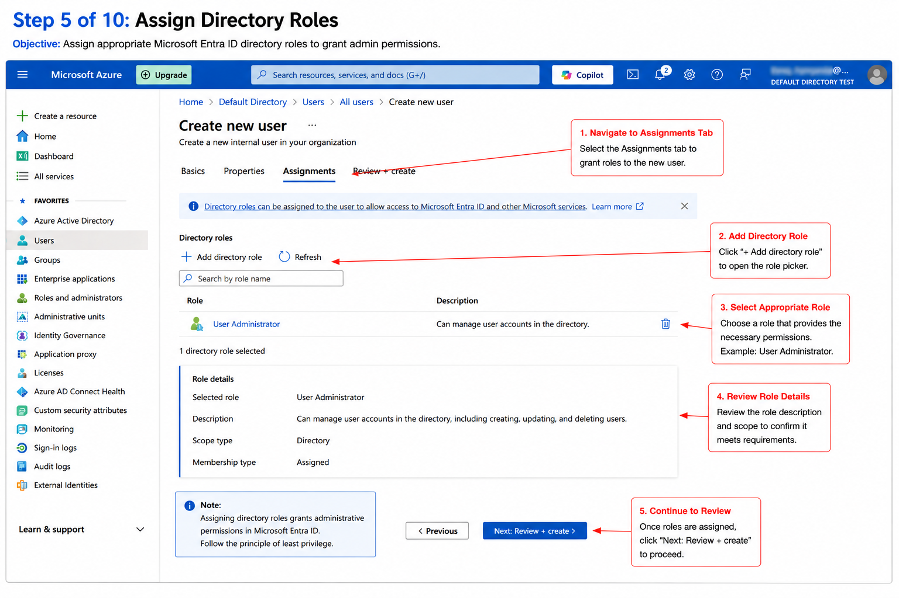
Confirmed the administrator account appeared successfully in the tenant user list.
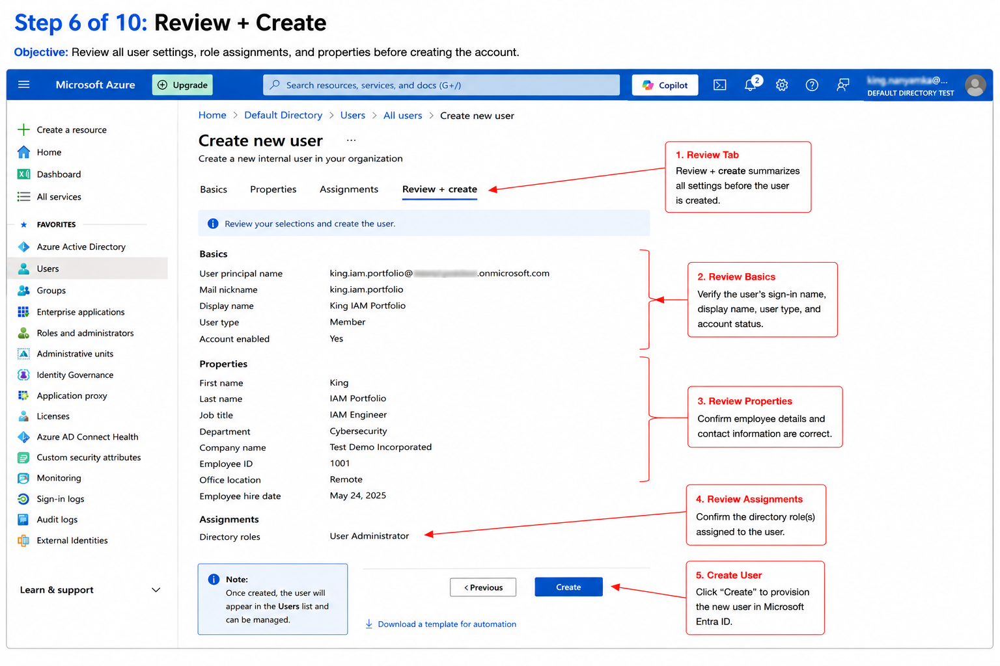
Opened the user profile to confirm identity details and account configuration.
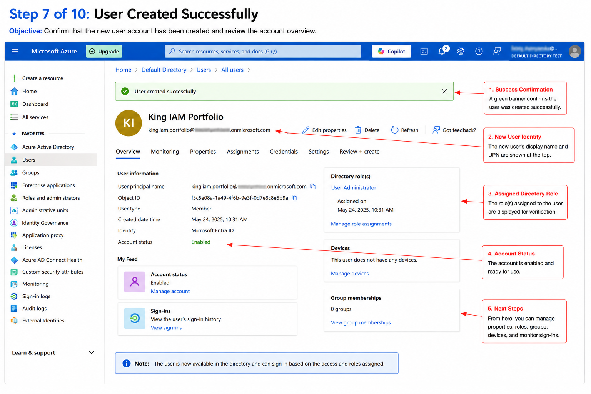
Confirmed the Global Administrator role was assigned to the new administrator account.
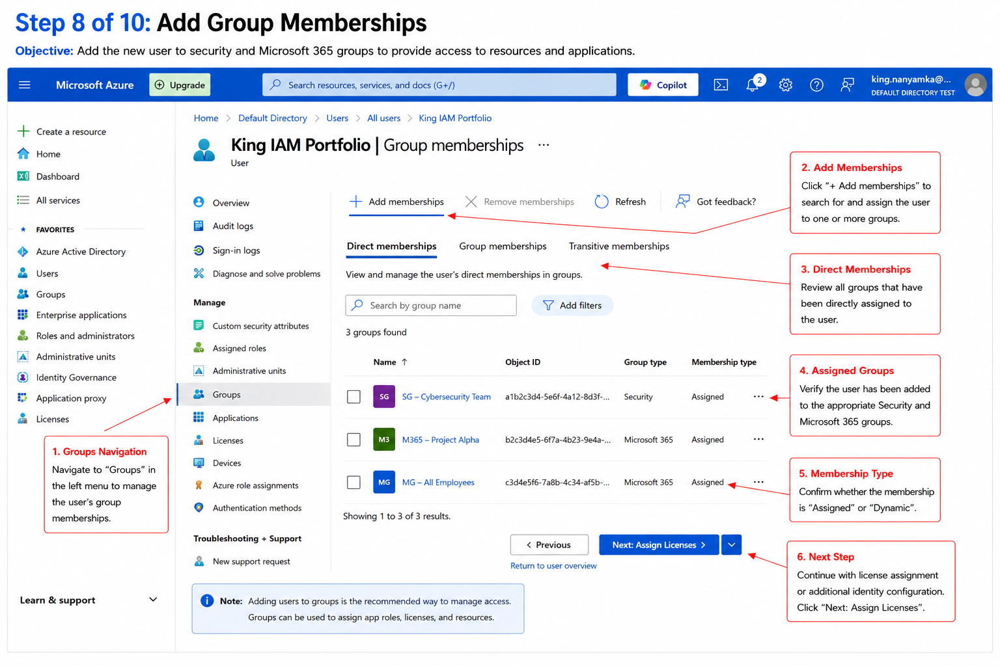
Validated the tenant overview after the administrator account was created.
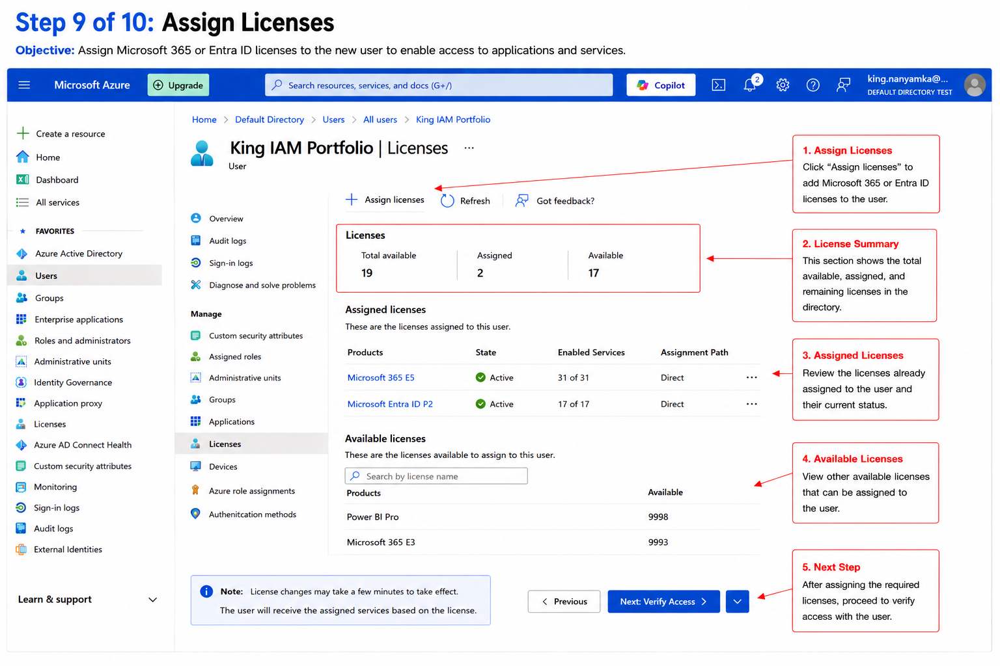
Captured the final tenant state as evidence of successful identity setup.
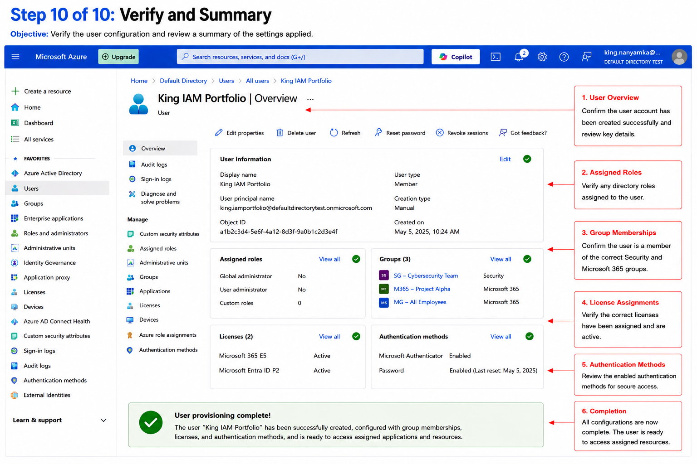
Created and validated a cloud-only administrator account in Microsoft Entra ID.
Assigned and verified an administrative directory role for tenant management.
Documented identity creation, validation, and administrative readiness steps.
Created a visual workflow and written an implementation summary for portfolio review.